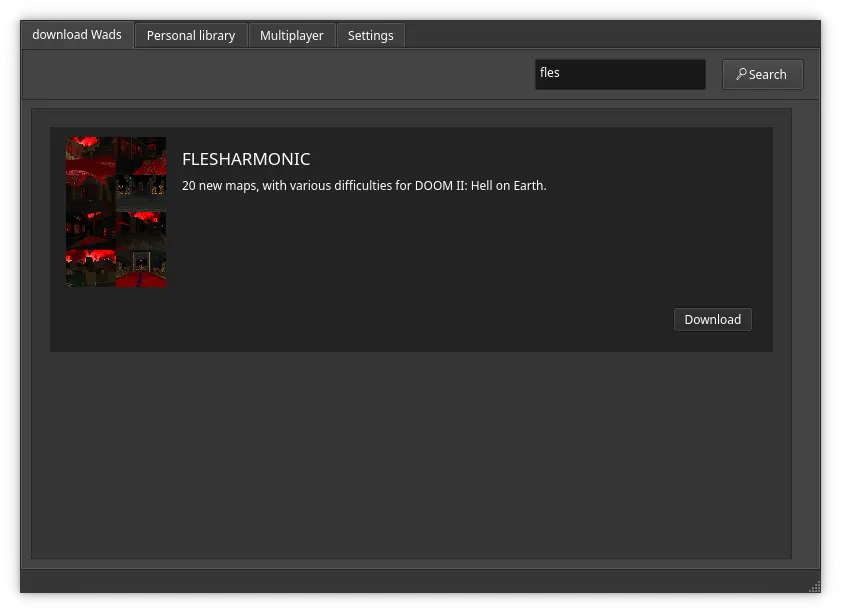
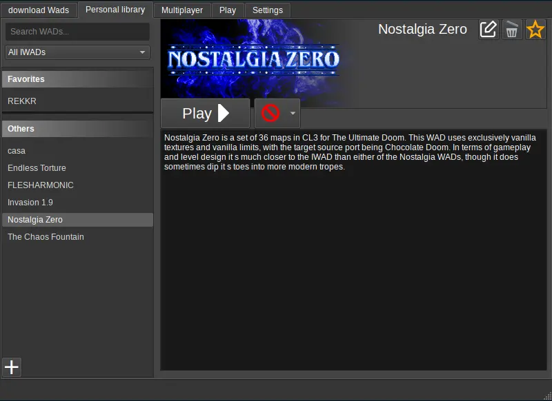
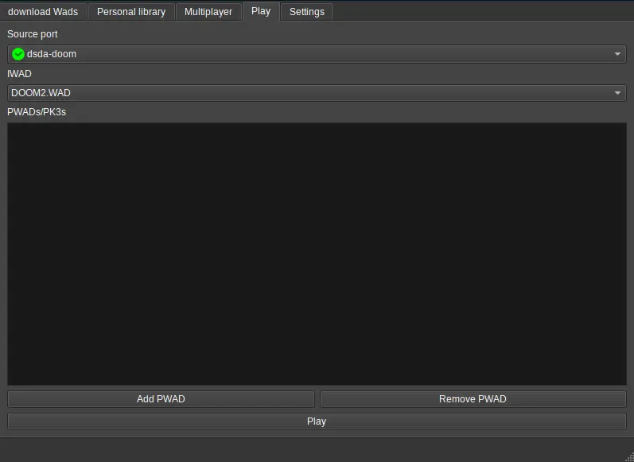
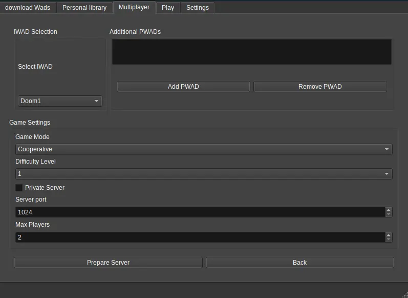

StooM : Download and Play
Your app to play DooM wads easily.
Features

WAD Downloads
Easily download WADs from the application, with two sources : IdGames and a selection from StooM : D & P.

Personal Library
Find all your WADs in that place, play with profiles, different sources ports, and more.

Single Player
Play solo with multiple source ports, pwads, and different IWADs.

Multiplayer
Play multiplayer via GZDoom (local only for now) It supports sending the files (except IWADs) to the other players.